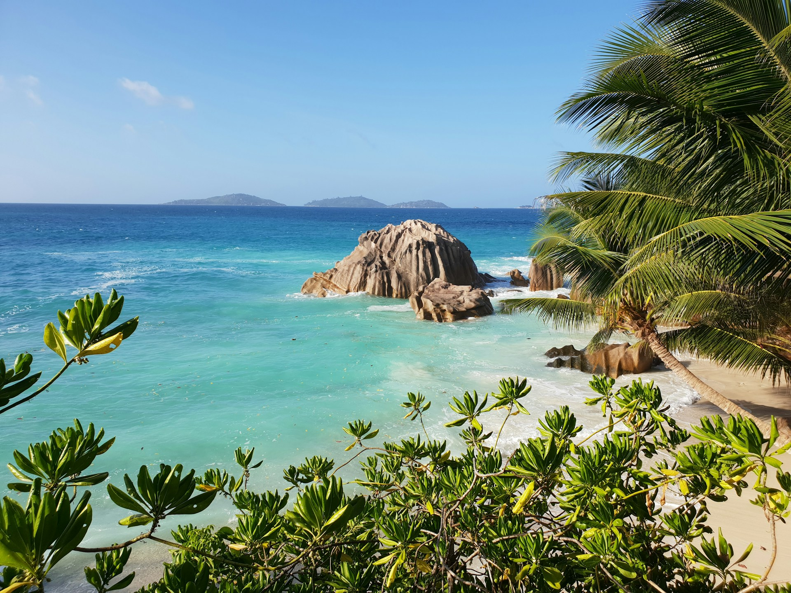
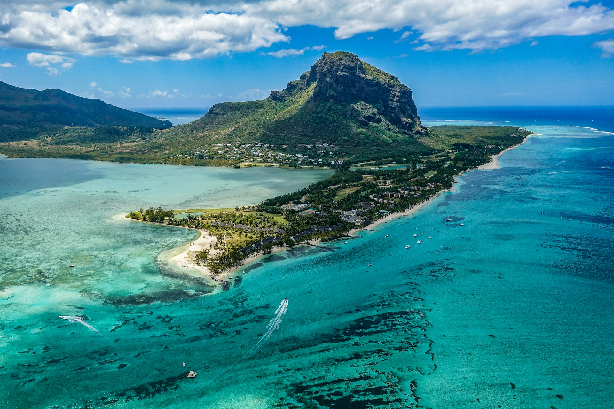
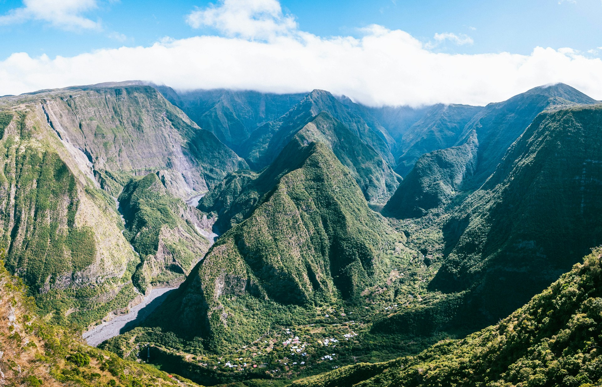
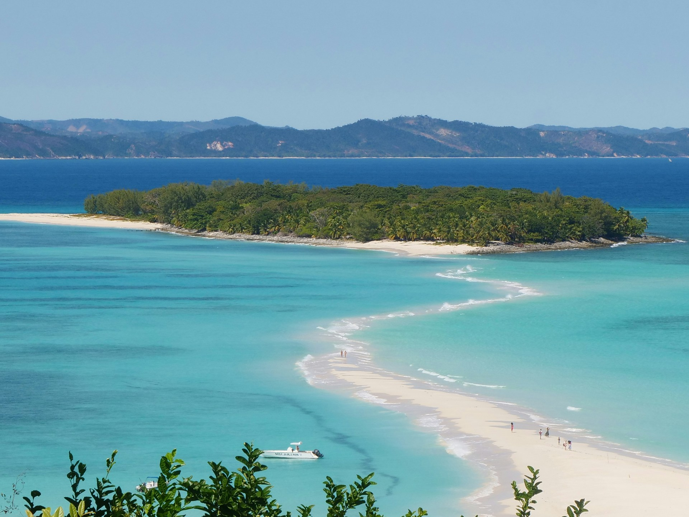

Branding & Communication Specialist — Internal CoordinationSpécialiste Marque & Communication — Coordination interne
Alex Jeffries
Branding & Communication Specialist · Expert 3Spécialiste Marque & Communication · Expert 3
A diagnostic on the factors that will shape this brand — and what we establish together today.Un diagnostic sur les facteurs qui façonneront cette marque — et ce que nous établissons ensemble aujourd'hui.
This is one of six deliverables in a three-year technical assistance programme to develop a Blue Tourism Cluster across the Indian Ocean SWIO region. The brand is the public-facing output — but it has to be anchored in something real.C'est l'un des six livrables d'un programme d'assistance technique de trois ans visant à développer un cluster de tourisme bleu dans la région SOOI. La marque est le résultat visible — mais elle doit être ancrée dans quelque chose de réel.
Tourism directly tied to marine and coastal ecosystems: coral reefs, mangroves, coastal livelihoods, ocean access.Tourisme directement lié aux écosystèmes marins et côtiers : récifs coralliens, mangroves, moyens de subsistance côtiers, accès à l'océan.
5 million km² of Exclusive Economic Zones. Rich marine biodiversity under pressure from climate change, unplanned development, and uneven investment across territories.5 millions de km² de Zones Économiques Exclusives. Riche biodiversité marine sous pression climatique, développement non planifié et investissements inégaux entre les territoires.
Unify a regional identity across six territories. Provide eco-certification aligned with GSTC criteria. Give operators, communities, and travellers a shared credential they can trust.Unifier une identité régionale sur six territoires à différents stades de développement. Fournir une éco-certification alignée sur les critères GSTC. Donner aux opérateurs, aux communautés et aux voyagistes un référentiel commun auquel ils peuvent faire confiance.
A blue tourism brand is a shared regional credential — certifying that a destination's offer is genuinely rooted in its marine ecosystems, coastal communities, and ocean health. Success means it is built and trusted locally, sustained over time, and genuinely felt by the travellers who choose it. Five factors in particular are the starting point for getting there.Une marque de tourisme bleu est un référentiel régional commun — certifiant que l'offre d'une destination est véritablement ancrée dans ses écosystèmes marins, ses communautés côtières et la santé de l'océan. Le succès, c'est une marque construite et reconnue localement, durable dans le temps, et réellement ressentie par les voyageurs qui la choisissent. Cinq facteurs en particulier sont le point de départ pour y parvenir.
Who holds this brand and can actually mobilize actors across six territories?Qui tient cette marque et peut réellement mobiliser les acteurs dans six territoires ?
A regional brand across six territories raises questions a logo cannot answer. Who sets the standard? Who enforces it? Who speaks for the whole?Une marque régionale sur six territoires soulève des questions qu'un logo ne peut résoudre. Qui fixe la norme ? Qui la fait respecter ? Qui parle au nom de l'ensemble ?
If we're going to claim blue tourism, we need something that holds up when someone asks: prove it.Si nous allons revendiquer le tourisme bleu, nous avons besoin de quelque chose qui tient la route quand quelqu'un demande : prouvez-le.
If we make blue tourism claims without institutional backing, we're building on sand.Si nous faisons des affirmations de tourisme bleu sans ancrage institutionnel, nous construisons sur du sable.
Policy frameworks the brand can anchor in — hover a territory to see its proof-points.Cadres politiques sur lesquels ancrer la marque — survolez un territoire pour voir ses points de preuve.
Does the brand work for destinations at every stage of development?La marque fonctionne-t-elle pour les destinations à chaque stade de développement ?
The brand must work for destinations at every stage of development. If it doesn't, it can't represent the region it claims to speak for.La marque doit fonctionner pour les destinations à chaque stade de développement. Sinon, elle ne peut pas représenter la région qu'elle prétend incarner.
Why would an operator choose to certify?Pourquoi un opérateur choisirait-il de se certifier ?
Operators deliver the brand experience on the ground. They won't engage unless the case is commercial and concrete.Les opérateurs délivrent l'expérience de la marque sur le terrain. Ils ne s'engageront pas si la raison de le faire n'est pas commerciale et concrète.
Who gets to author the story the brand tells?Qui est l'auteur de l'histoire que raconte la marque ?
A brand that speaks about the ocean but is written by outsiders has no real authority. The six territories have distinct identities — the brand only works if those communities are its authors, not its subjects.Une marque qui parle de l'océan mais écrite par des étrangers n'a aucune véritable autorité. Les six territoires ont des identités distinctes — la marque ne fonctionne que si ces communautés en sont les autrices, pas les sujets.
What we need from this group to move each factor forward.Ce dont nous avons besoin de ce groupe pour faire avancer chaque facteur.
| FactorFacteur | AskDemande | Why it mattersPourquoi c'est important |
|---|---|---|
| 01 GovernanceGouvernance | What regional tourism coordination already exists beyond Vanilla Islands — meetings, groups, bilateral relationships — and who from your territory is involved?Quelle coordination touristique régionale existe déjà au-delà de Vanilla Islands — réunions, groupes, relations bilatérales — et qui de votre territoire y participe ? | The brand should attach to structures already meeting — we need to know what connective tissue existsLa marque devrait s'appuyer sur des structures qui se réunissent déjà — nous devons connaître les liens existants |
| 02 AnchoringAncrage | Confirm status of STMSCS Blue Oasis (Mauritius) and SS certification (Seychelles) — operator counts, scopeConfirmer le statut du STMSCS Blue Oasis (Maurice) et la certification SS (Seychelles) — nombre d'opérateurs, périmètre | These are the strongest proof-points — we need accurate data before we communicateCe sont les arguments les plus forts — nous avons besoin de données précises avant de communiquer |
| 03 MaturityMaturité | What sustainability certifications or formal accreditations does your territory currently hold — and at what scale?Quelles certifications de durabilité ou accréditations formelles votre territoire détient-il actuellement — et à quelle échelle ? | We need to map where each territory sits before we can design entry criteria that work at every levelNous devons cartographier la position de chaque territoire avant de concevoir des critères d'entrée adaptés à chaque niveau |
| 04 Private SectorSecteur privé | Name 3–5 operators in your territory most likely to be early adoptersNommer 3 à 5 opérateurs dans votre territoire susceptibles d'être les premiers adoptants | Names before strategy — these are the champions we engage firstDes noms avant la stratégie — ce sont les champions que nous mobilisons en premier |
| 05 Co-creationCo-création | Name 2–3 community groups in your territory — CBT operators, heritage associations, marine or fishing organisations — who should have a seat in the brand design processNommer 2 à 3 groupes communautaires dans votre territoire — opérateurs de tourisme communautaire, associations patrimoniales, organisations marines ou de pêche — qui devraient participer à la conception de la marque | Names before the design brief — co-authorship starts hereDes noms avant le brief de conception — la co-autorialité commence ici |
THE REGIONLA RÉGION



